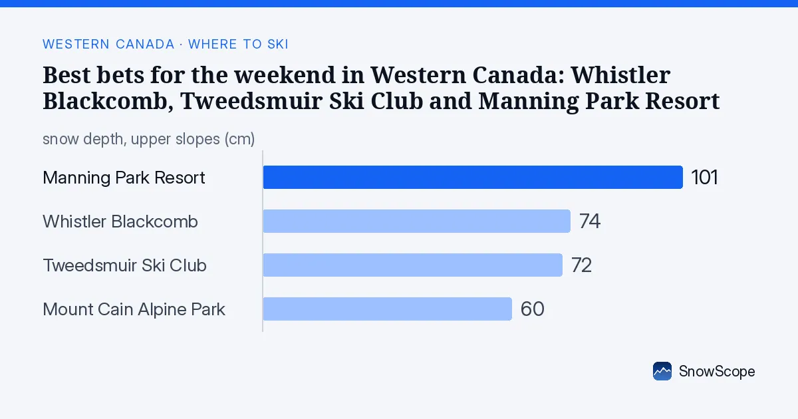

Best bets for the weekend in Western Canada: Whistler Blackcomb, Tweedsmuir Ski Club and Manning Park Resort
This weekend, Manning Park Resort holds the deepest snow on its upper slopes at 101 cm, with Whistler Blackcomb at 74 cm and Tweedsmuir Ski Club at 72 cm. The choice between them depends on what you want: the most snow now, the freshest snow, or what is coming in the next few days.
See the live snow forecast for Whistler Blackcomb in the SnowScope appSnow depth, powder alerts and the 3D map, free.
What fell in the last three days
Tweedsmuir Ski Club saw the most recent snow: 38 cm in the last 72 hours, with 35 cm arriving on 11 November alone. Whistler Blackcomb received 29 cm over three days. Manning Park Resort got only 6 cm in the same period.
Fresh snow matters for skiing quality. At Tweedsmuir Ski Club, the recent heavy fall means the top layers are soft and skiable across all heights from base to peak. Whistler Blackcomb's fresh snow sits on a base that grows deeper with height: the top at 2,259 m has 87 cm, while mid-mountain at 1,456 m has 42 cm.
| Resort | Snow depth | New snow, 72 h | Coming, next days | Top |
|---|---|---|---|---|
| Whistler Blackcomb | 74 cm | 29 cm | 34 cm | 2,259 m |
| Tweedsmuir Ski Club | 72 cm | 38 cm | 15 cm | 1,650 m |
| Manning Park Resort | 101 cm | 6 cm | 3 cm | 1,789 m |
| Mount Cain Alpine Park | 60 cm | 14 cm | 22 cm | 1,616 m |

What the forecast brings
By Saturday 14 November, Whistler Blackcomb will gain the most new snow: 34 cm is forecast over the next few days. Tweedsmuir Ski Club will see 15 cm, and Manning Park Resort just 3 cm. These numbers can shift; check the map again on Friday to confirm.
The timing matters too. At Whistler Blackcomb, most of the new snow arrives on 12 November (16 cm) and 14 November (17 cm). At Tweedsmuir Ski Club, 12 cm comes on 12 November, then lighter snow follows.
Height and aspect: where to ski
Whistler Blackcomb spreads over a tall mountain. The top at 2,259 m shows 87 cm and will stay colder longer. Mid-mountain at 1,456 m has 42 cm. The base at 653 m has almost no snow. Plan your run to stay high.
Tweedsmuir Ski Club sits on higher terrain: its base is at 1,588 m and top at 1,650 m. Snow depth is more even across the mountain—around 58 to 61 cm—because the whole area sits at similar height. Manning Park Resort rises to 1,789 m; its upper slopes hold 101 cm but the mid-height terrain at 1,574 m has only 6 cm.
Rain and melt risk
On 13 November, Whistler Blackcomb's freezing level reaches 2,140 m to 2,870 m. Since the top is at 2,259 m, rain or wet snow is possible at the summit that day. Wet snow accelerates the melt. The day after, on 14 November, the freezing level drops to 1,490 m to 2,080 m, so snow will be more stable.
Tweedsmuir Ski Club sits in higher terrain but faces a similar cycle: the freezing level on 13 November swings from 1,040 m to 1,870 m. On 14 November it falls to 1,000 m to 1,340 m, meaning most of the mountain stays below freezing by Saturday morning.
How this winter compares
At Tweedsmuir Ski Club, the snow depth of 65 cm at mid-height (1,619 m) is deeper than the same date in 33 of the past 46 winters—a good sign for early November. Whistler Blackcomb at mid-mountain (1,456 m) shows 33 cm, which is deeper than only 5 past winters on this date, so it is running below normal. Mount Cain Alpine Park's mid-height snow of 29 cm is deeper than 30 of the past 46 winters.
Early-season snow is often thin and covers rocks and grass. Even 72 or 101 cm may hide obstacles. Stay on open, groomed pistes and check the resort website to confirm lifts are running.
Tips for skiers
- Visit the resort website to confirm which lifts and terrain are open. Snow on the map does not guarantee operations.
- North-facing slopes and high terrain keep snow longest as the sun strengthens through November. Plan runs to avoid south-facing aspects in the afternoon.
- Early-season snow often sits thin over rocks and vegetation. Ski groomed pistes until the base deepens.
- Forecasts change within days. Check SnowScope again on Friday before you drive.
- Before any off-piste or touring, read the official avalanche bulletin for your area.
About these numbers
Resort snow depths are the deepest snow on the resort's upper slopes on the date shown; they are estimates for an area, not a measurement at one point. Forecasts can change. Always read the official avalanche bulletin before going off-piste.
Official avalanche bulletins: Avalanche Canada
Cite this report
For research, teaching or the press: the numbers and charts are free to reuse under CC BY 4.0 with this citation.
SnowScope (2026), Best bets for the weekend in Western Canada: Whistler Blackcomb, Tweedsmuir Ski Club and Manning Park Resort, https://snowscope.app/blog/en/2026/11/western-canada-where-to-ski-this-weekend-11-november-2026.html, accessed 2026-11-11
SnowScope (Atlas Labs). (2026, November 11). Best bets for the weekend in Western Canada: Whistler Blackcomb, Tweedsmuir Ski Club and Manning Park Resort. SnowScope snow reports. https://snowscope.app/blog/en/2026/11/western-canada-where-to-ski-this-weekend-11-november-2026.html
BibTeX
@misc{snowscope2026westerncanadawheretoskit,
author = {{SnowScope (Atlas Labs)}},
title = {Best bets for the weekend in Western Canada: Whistler Blackcomb, Tweedsmuir Ski Club and Manning Park Resort},
year = {2026},
month = nov,
howpublished = {\url{https://snowscope.app/blog/en/2026/11/western-canada-where-to-ski-this-weekend-11-november-2026.html}},
note = {Published 2026-11-11 18:44 UTC; accessed 2026-11-11}
}· CC BY 4.0 · Methods, data and tools →
Whistler Blackcomb: snow and temperature by height, this winter vs last (tools) →
Follow Whistler Blackcomb
Free: a message when fresh snow is coming, and the forecast every morning.
More snow reports

Where is the deepest snow in Western Canada today? Deepest snow in Western Canada today: Manning Park Resort, about 110 cm on the upper slopes …

Manning Park Resort has 22 percent of normal snow on 2026-11-15, with best historical snow arriving in weeks 12-14, still months away.

Mount Cain Alpine Park fresh snow compared with the region: 15 cm in 72 hours (12 November). The snow cover shrank from 281,250 km² on 10 November to …